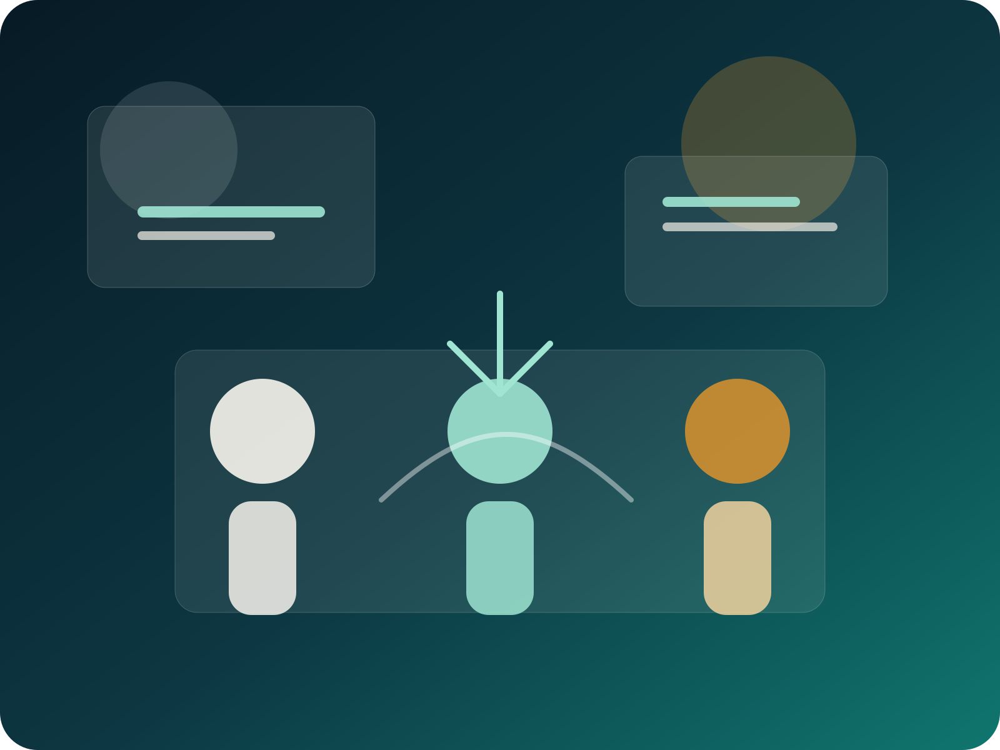
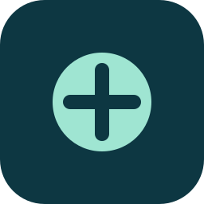
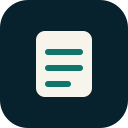
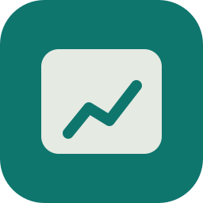
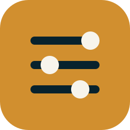
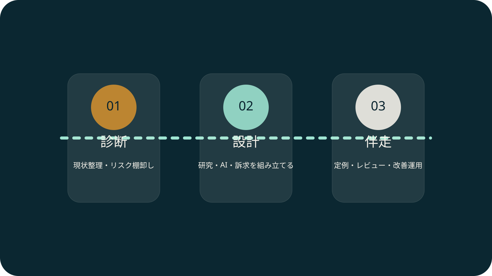
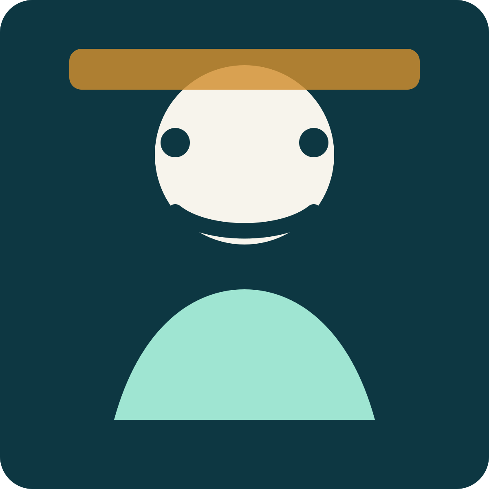
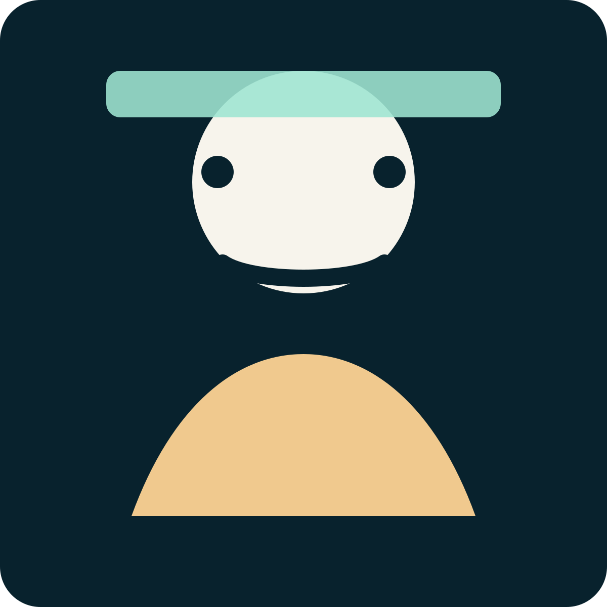
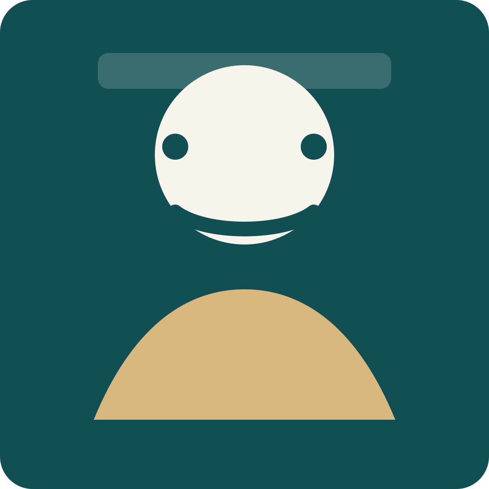

LPや営業資料に医療的な説得力が足りない
B2B Medical Consulting
医療監修で終わらせない。
医師3名が、事業・研究・発信まで伴走する
法人向け医療コンサルティング
産婦人科医2名とリハビリ医1名の医師チームが、医療・ヘルスケア接点を持つ中小企業に対して、医療 / 臨床研究 / RCT / 英語 / AI / YouTube・広告まで横断支援します。
産婦人科医 × 2 / リハビリ医 × 1臨床研究・論文化RCT実務・英語対応AI活用支援YouTube / 広告知見法人向け

Issue
こんな課題はありませんか
研究 / RCT / 文献整理をどう組み立てるべきかわからない
英語論文や海外向け資料の扱いに不安がある
AIを使いたいが、医療情報の品質が担保できない
YouTubeや広告を伸ばしたいが、医療表現が怖い
医師監修だけでは足りず、事業の壁打ち相手がほしい
Capability
5つの支援領域を、1つのチームで

医療・科学アドバイザリー
LP、営業資料、事業仮説、社内説明資料を医療・科学の観点からレビューします。

臨床研究・RCT・論文化支援
観察研究、PoC、アンケート、RCT、論文化までを一気通貫で設計します。

医療AI・情報品質設計
AI活用方針の整理から、医療情報品質の監修ルールづくりまで支援します。

英語 / 海外向け医療コミュニケーション
英語文献、英語資料、海外向け説明の精度向上を支援します。
YouTube・広告・オウンドメディア支援
医療の正確性と、再生・読了・CVにつながる発信設計を両立します。
Why Us
なぜ私たちなのか
| 比較項目 | 私たち | 一般的な医師監修 | 一般的な制作会社 / 代理店 |
|---|---|---|---|
| 医師の複数関与 | 3名の専門チーム | 単独対応が多い | 医師は外部監修のみ |
| 臨床研究 / RCT知見 | 研究設計から伴走 | 限定的 | 外部連携前提 |
| 英語資料対応 | レビュー可能 | 対応外が多い | 翻訳中心 |
| AI活用設計 | 医療品質前提で支援 | 対象外が多い | 一般的な運用提案 |
| YouTube / 広告知見 | 医療表現と運用を両立 | 対象外が多い | 医療表現に弱い |
| 事業壁打ち | 定例で実施 | 都度相談中心 | 事業理解が浅い |
| 継続伴走 | 松竹梅で継続支援 | 単発が中心 | 制作期間に限定 |
Best Fit
こんな企業に向いています
フェムテック / 女性向けヘルスケア事業者
産婦人科医2名の知見を活かし、事業設計、研究設計、啓発コンテンツ、医療監修を横断支援します。
ヘルスケアSaaS / 健康経営 / 福利厚生サービス企業
営業資料やLPに医療的妥当性が必要な企業に、継続顧問として伴走します。
ヘルスケアメディア / YouTube運営企業
医療の正確性と再生・CVの両立が必要なメディア運営を、企画からレビューまで支援します。
医療機器 / デジタルヘルス / 海外展開準備中スタートアップ
研究、英語資料、海外向け説明、PoC設計が必要な重要局面をサポートします。
Support Flow
支援イメージ
診断
現状整理、リスク棚卸し、優先テーマを決める入口フェーズ。
設計
訴求、研究、AI、英語、発信の設計をプロジェクトに合わせて組み立てるフェーズ。
伴走
定例・レビュー・成果物作成を通じて、社内実行まで前に進めるフェーズ。

30 / 60 / 90 Days
30 / 60 / 90日の進め方
0〜30日
事業理解 / 資料棚卸し / 医療リスク洗い出し / 優先テーマ決定
31〜60日
メッセージ整理 / 文献レビュー / LPや営業資料の改善 / AIまたは発信設計
61〜90日
実運用への落とし込み / KPI確定 / 次の3か月の計画
Team
チーム紹介

AI・情報品質
産婦人科医A
産婦人科医 / 医療AI・情報品質担当
AIを使う前提でも、医療情報の正確性と運用ルールを崩さない体制づくりに強みがあります。

英語・RCT・研究実務
産婦人科医B
産婦人科医 / 英語・RCT・研究実務担当
英語文献、RCT、研究実務に強みを持ち、観察研究から論文化までを事業文脈に接続します。

YouTube・広告・発信設計
リハビリ医C
リハビリテーション科医 / YouTube・広告・発信設計担当
YouTube運営や広告実務を踏まえ、医療の正確性と成果導線の両立を支援します。
Pricing
料金表
案件の難易度と関与範囲に応じて調整はありますが、目安が見えないまま商談に進ませないため標準価格を公開します。
診断パック
30万円（税別） / 2週間
優先施策3〜5本と3か月伴走提案書を納品
梅
月額60万円 + 初期20万円
原則3か月契約
竹
月額100万円 + 初期30万円
原則3か月契約
松
月額180万円 + 初期40万円
原則3か月契約、推奨6か月
法人向け患者個人の相談は対象外法務・薬機法の最終判断は専門家連携
FAQ
よくある質問
どんな企業が相談していますか？
フェムテック、ヘルスケアSaaS、福利厚生サービス、ヘルスケアメディア、YouTube運営企業、医療機器やデジタルヘルス領域のスタートアップなどが主な対象です。
患者向けの医療相談はできますか？
できません。本サービスは法人向けの情報提供・レビュー・伴走支援を対象としており、患者個人への診療相談や個別の治療判断は行いません。
薬機法や医療広告の最終確認までお願いできますか？
表現リスクの整理やレビューは支援しますが、法務・薬機法・医療広告の最終判断は専門家と連携して行う前提です。
記事監修だけでも依頼できますか？
単発監修も相談可能ですが、主力は事業・研究・発信まで含む伴走支援です。
英語資料や海外向け資料にも対応できますか？
対応可能です。英語文献レビュー、英語資料の表現確認、海外向けの医療コミュニケーション整理まで支援します。
どのプランを選べばよいかわかりません。
課題が散らばっている場合は診断パック、定例で壁打ちしたい場合は梅、具体施策まで一緒に進めたい場合は竹、重要局面で横断支援が必要な場合は松が目安です。
Contact
まずは無料相談で、何をどこまで外部化すべきか整理してください
監修だけで足りるのか、研究設計まで必要なのか、AIや発信まで含めるべきかをヒアリングし、診断パックまたは月額プランにつなげます。
- 法人向けサービスです
- 患者個人の相談は対象外です
- 通常2営業日以内を目安に返信します